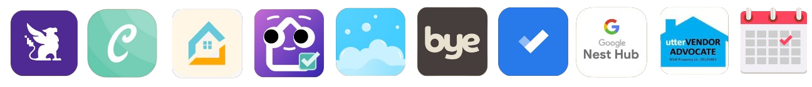
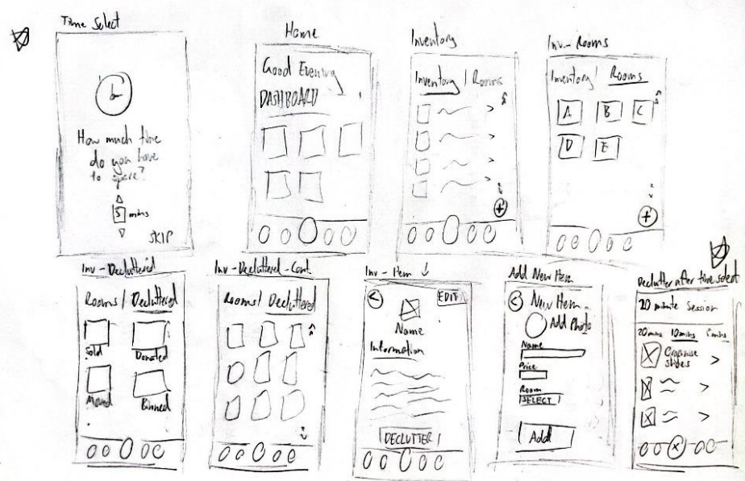
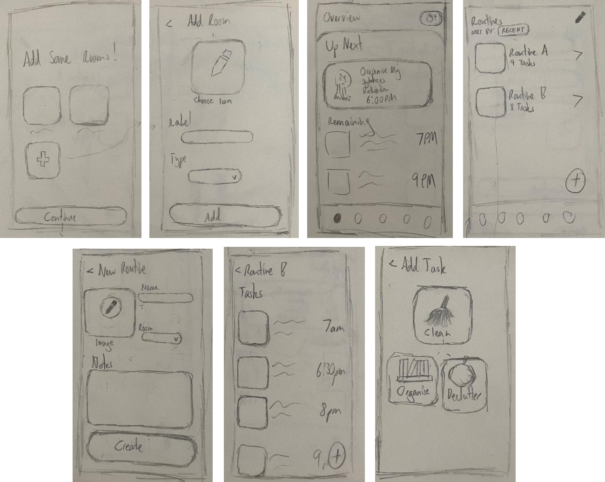
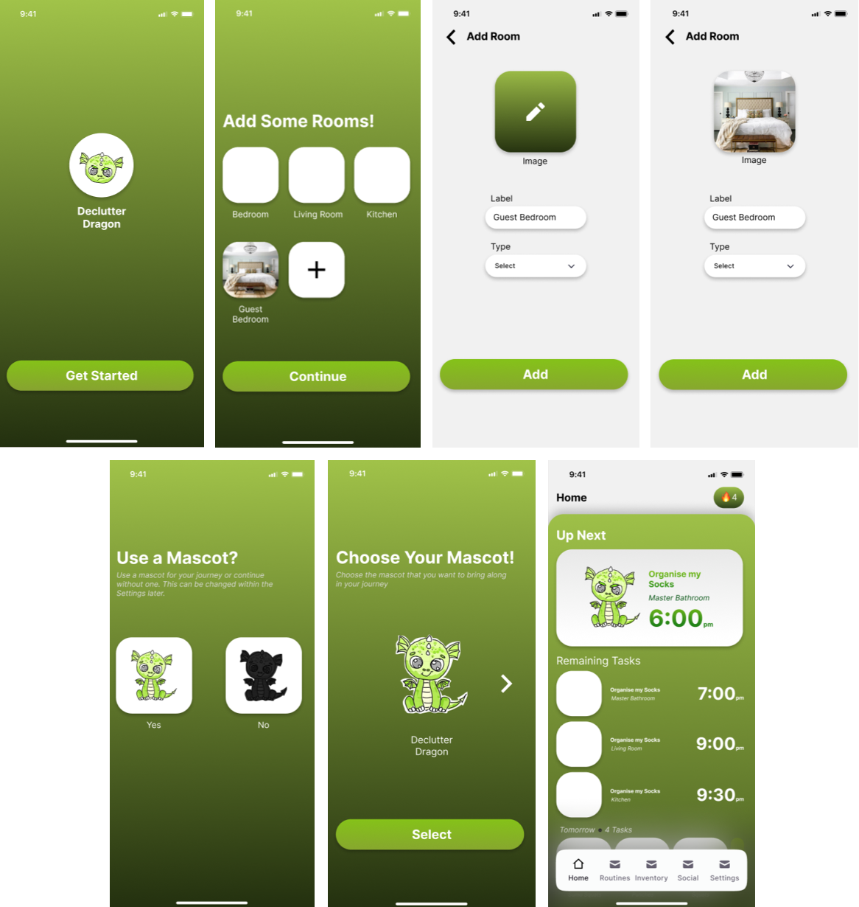
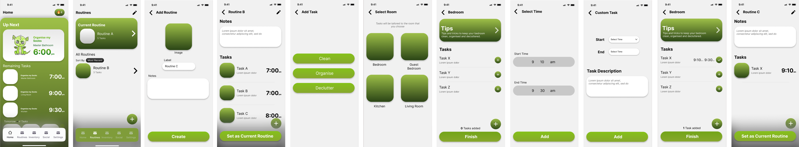
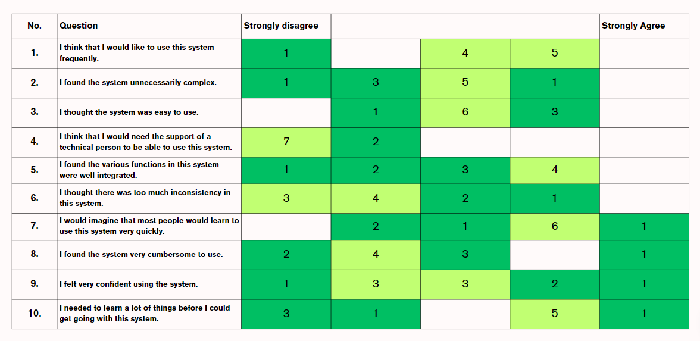

A networked technology consisting of a mobile app and a digital photo frame, designed to improve
emotional wellbeing within the home.
Role
UI/UX Designer, Researcher
Tools
Figma
Duration
3 months
Overview
This capstone project encourages regular decluttering and organising habits among its users, with the addition of a
digital photo frame device aiming to extend these habits over the long-term. Adhering to a Lean UX approach to design, this
MVP-level product was developed with a team of 5 over the course of 3 months.
The Problem
In a post-COVID age, more than ever before, it is important to support or help people through the use of technology to
improve their quality of life at home. It is difficult and daunting for many individuals to stay on top of their organising
and decluttering habits, especially in the long-term.
Currently, decluttering apps struggle to address this problem.

Research
Analysing Market & Competition
By conducting market analysis on various reference products, the following knowledge was obtained:
Key Insight #1
User Retention
Many decluttering apps fail to retain their userbase, reaffirmed through defunct
social/ community features.
Key Insight #2
Learnability
Steep learning curve for the UI of a typical decluttering app, resulting in slow and
confusing initial interactions.
Proto-Personas
Rapid proto-personas were formed to better define the wants and needs of the target audience with minimal research.
Low-Fi Prototype
With a Lean UX approach, quick iterations of paper prototypes and wireframes were constructed. The following artefacts are my contributions to this stage,
demonstrating the key features: decluttering and inventory management.

First Iteration
Emphasising the concept of suggesting what to declutter based on the time that the user has to spare, which was an interesting
take-away that the team came up with after the market analysis (Top-left corner and bottom-right corner).

Last Paper Iteration
Creating a much clearer sequence of screens, where the user begins with adding rooms in the introductory screens. They then
move on to create their regular routines, where tasks can be added within them.

First Figma Iteration
Adding colour and introducing the mascot into the app, one of the key features that aimed to help motivate users to stick to
their declutter routines.
At this stage, the key features that were to be incorporated included:
Inventory Management, Routines for Cleaning, Decluttering or Organising and the Digital Photo Frame.
"Clean space, clean mind"
Low-Fi to Mid-Fi Prototype
Transitioning to a mid-fi prototype, features were added, modified and scrapped various times, as is expected in a Lean UX approach.
In addition to this, internal and external user testing and heuristic evaluation on the functionality was conducted to further improve the
prototype.

Testing
To ensure insightful findings through user testing and heuristic evaluation, the team employed various tasks for 10 participants to complete,
as well as a usability questionnaire.

60%
of particpants neither agreed or disagreed that the system was easy to use
30%
of participants agreed/ strongly agreed that they were confident in their decisions during their interaction
60%
of participants agreed/ strongly agreed that they needed to learn a lot before progressing through the system
Key Takeaway
Improve on introducing the user to the system’s features, ensuring that the
user understands what they are interacting with and are confident in their actions.
Mid-Fi Prototype
My focus when building the mid-fi prototype was to ensure that improvements were made in three key areas:
★ Help & Documentation
★ Visibility of System Status
★ Learnability